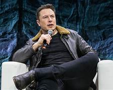

Elon Musk

Elon Musk: A Visionary Shaping the Future
Early Life : Born on June 28, 1971, in Pretoria, South Africa.
Academic Excellence: Elon Musk displayed an early aptitude for technology and entrepreneurship. He moved to the United States to attend the University of Pennsylvania, where he earned degrees in physics and economics. Later, he pursued a Ph.D. at Stanford but left to co-found Zip2, a web software company.
Entrepreneurial Ventures:Elon Musk's entrepreneurial journey is a testament to his fearless pursuit of ambitious goals. Some of his most notable ventures includes PayPal ,Tesla, Inc., SpaceX, SolarCity and Solar Energy, Neuralink, The Boring Company.
Vision for a Sustainable Future: One of Musk's driving forces is his commitment to addressing humanity's most pressing challenges. He envisions a future where sustainable energy, multi-planetary colonization, and advanced AI are central. His work with Tesla and SpaceX reflects these goals.
Challenges and Controversies:Elon Musk's journey has not been without obstacles and controversies. He has faced criticism for his management style, public statements on social media, and safety concerns at Tesla and SpaceX. Nevertheless, his determination and resilience have propelled him forward.
Conclusion:Elon Musk is a polarizing figure, but his impact on the world is undeniable. Through his ventures, he has pushed the boundaries of technology and innovation, sparking conversations about the future of transportation, space exploration, and sustainable energy. Whether you admire him or question his methods, there's no denying that Elon Musk has left an indelible mark on the present and future of humanity. As we continue to witness his endeavors unfold, one thing remains clear: Elon Musk is a visionary shaping the world as we know it.